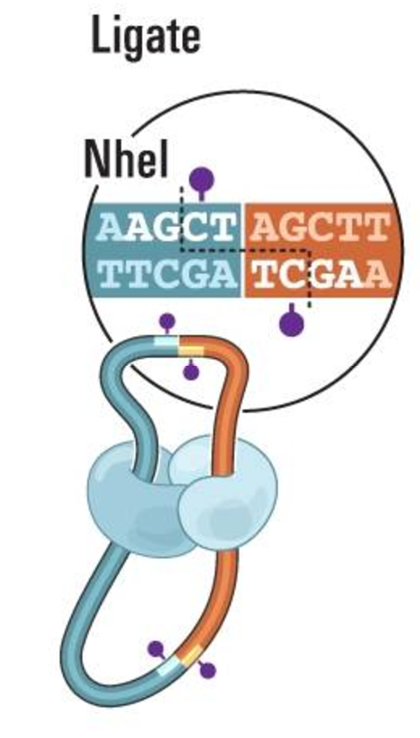
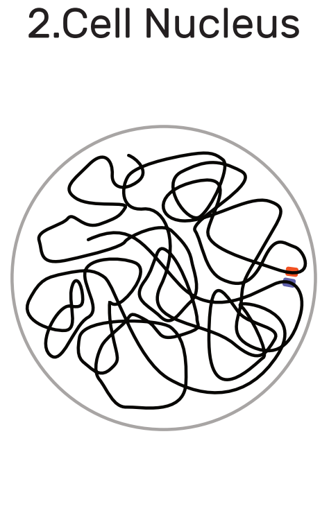

Genomes, maps and matrices
How we use the technology behind web-based maps to explore trillion-cell genome contact matrices
Peter Kerpedjiev
Postdoc, Gehlenborg Lab
Harvard Medical School
The Question
What is the structure of DNA within the nucleus?
DNA

|
3.4e-10m distance between base pairs * 6e9 base pairs ~= 2.04 meters of DNA in a single cell
The nucleus
Nucleus is about 1 micrometer (1e-6 meters) in diameter.
DNA is tightly packed within the nucleus

|

|
Why do we care?

It affects biological processes such as gene expression (Zuin et al. 2014), cancer (Hnisz et al. 2016), X-Chromosome inactivation (Chen et al. 2014)
How do we measure DNA structure?
X-Ray Crystallography?
Structure 5I6Q from PDB
How do we measure DNA structure?
Microscopy?
Horng et al. Science 2017
How do we measure DNA structure?
Hi-C?
What is Hi-C data?
Hi-C data describes contacts between distal portions of DNA|  |
 |
 |
Hi-C Data (Overview)
|  |
 |
 |
 |
The end result of a Hi-C assay is a sparse 3 million by 3 million contact matrix.
Hi-C Contact Matrices
To understand the structure of DNA within the nucleus, we need to be able to explore and compare Hi-C contact matrices in the context of other genomic data and annotations
Goal of this project
Create software to explore, compare and contextualize Hi-C contact matrices
Our Challenges
Challenge #1
How do we explore a 3M x 3M matrix in a web browser?
- 9 trillion cells
- 22Gb of compressed data
- Dynamic range spanning multiple orders of magnitude
Solution
Solution: Allow the user to navigate the matrix like a map: zooming and panning to regions of interest.
How does this work?
How is the client built?
|
Fast WebGL-based rendering |
|
|
Scales, utility functions and behaviors such as zooming and brushing |
|
|
User interface composition and manipulation |
How is the server built?
|
Content management |
|
|
Data storage |
|
How are they deployed?
The HiGlass Docker container can either be deployed locally or on cloud infrastructure (eg. http://higlass.io).
How are the components tested?
How are the components tested?
How are the components tested?
Open Questions
- How do we efficiently retrieve subsections of a compressed sparse trillion cell matrix?
- E.g. extract a 256x256 submatrix in less than 100ms
- How do we render millions of data points at >30 fps?
- What are the minimum APIs required to request variations of the data
- E.g. Give me dataset x divided by dataset y
Challenge #2
How do we place the Hi-C contact matrix in the context of other genomic data?
Solution
How do we do this?
What data do we display as 1D tracks?
| Chromosome boundaries | chromSizes file | |
| Gene Annotations | SQLite (beddb) | |
| Signal tracks (e.g. TF binding) | bigWig, hitile |
Gene Annotations
- uuid: unique identifier
- startPos: start of annotation
- endPos: end of annotations
- chrOffset: offset from the start of the containing chromosome
- importance: occlusion order based on number of citations
- fields: annotations's data (e.g. exon positions)
Challenge #3
How do we compare data from multiple experimental conditions to gain insights and communicate findings?
Solution
Create a flexible framework for synchronizing zoom and location across views.
Solution
Views can be arbitrarily linked according to their zoom and location. They can also "project" their viewport onto another view to provide a context and detail.
Solution
Summary
We created software to explore, compare and contextualize Hi-C contact matrices
It's available at http://higlass.io
Now what?
Custom Data Sources
Option #1
Option #2
Example - HiGlass Running in Jupyter
Custom Data Types - GeoJSON

https://github.com/flekschas/higlass-geojson
Marketing
HiGlass is/was used by:
- Over 30 academic laboratories
- 4 companies (therapeutics, diagnostics, and space propulsion)
- 1 diagnostic laboratory (non-profit)
Acknowledgements
Harvard Medical School
- Nils Gehlenborg
- Fritz Lekschas (also at John Paulson School of Engineering)
- Chuck McCallum
- 4DN DCIC Team
MIT
- Nezar Abdennur
- Leonid Mirny